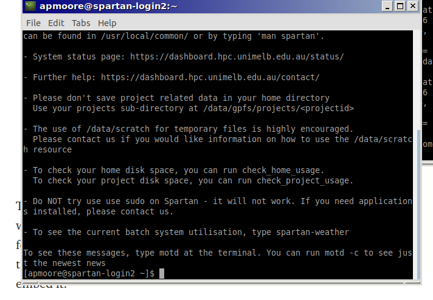

Setting up virtual environment.
Instructions to set up python virtual environment on hpc cluster.
Once the virtual environment is set up, you should be able to run all code in jupyter notebook.
You will need to have access to gpgpu partition.
You need to set up a virtualenv to run the circuitSNPs jupyter notebook. Virtualenv keeps all the python libraries in one place - this is useful because libraries are always being updated, so if you want to run code that you worked on a year ago, often it won’t work with new libraries.
On spartan, we can set up virtualenv as follows:

All following instructions involve typing commands into bash terminal.
Options for different user may change.
I needed to set --qos=gpgpumdhs, please ask spartan helpdesk if having problems.
sinteractive --nodes 1 --account=punim0614 --partition gpgpu --qos=gpgpumdhs --mem 20000 --gres=gpu:p100:1 --time 00:30:00 --cpus-per-task=1
Copy paste this command to load all necessary modules for jupyter notebook
cd; module load Python/2.7.13-GCC-6.2.0; module load Tkinter/2.7.11-intel-2017.u2-Python-2.7.11; module load Python/2.7.13-GCC-6.2.0; module load Tensorflow/1.11.0-intel-2017.u2-Python-2.7.13-GPU; module load SAMtools/1.8-GCC-6.2.0-HTSlib-1.8; module load BEDTools/2.27.1-spartan_gcc-6.2.0; module load web_proxy
Now we make virtual environment.
p27_jp is the name I have assigned for virtual environment. the name doesn’t matter - call it whatever you want. Just make sure you reference the name properly when you load Jupyter notebook (explained below).
Change to home directory (ie using command cd) to keep virtual environment here. I’m assuming that you can put it elsewhere, but this configuration worked for me.
Create env using command below:
virtualenv p27_jp
This will take maybe 1-5 minutes.
Now we enable virtual env as below
source p27_jp/bin/activate
Now you’re inside the virtual environment. Any libraries that you install here using pip will stay here. Any libraries you have previously installed while inside this environment will be accessible when you want to use it in future.
You’ll see a lot of red messages - don’t worry
pip install numpy==1.16.6
At this stage, you need to read 3 separate lists of installation dependencies. I’ve stored them in my folder on the cluster - see path below. They are also stored within this github repository - if you download the repo, they are in main folder called ‘handover_installs’
Again, you will see some red messages when installing - this is expected
pip install -r /data/projects/punim0614/archer/handover_installs/pip_inst_1.txt
pip install -r /data/projects/punim0614/archer/handover_installs/pip_inst_2.txt
pip install -r /data/projects/punim0614/archer/handover_installs/pip_inst_3.txt
deactivate
logout
Ok now we can run jupyter - virtual environment is set up!